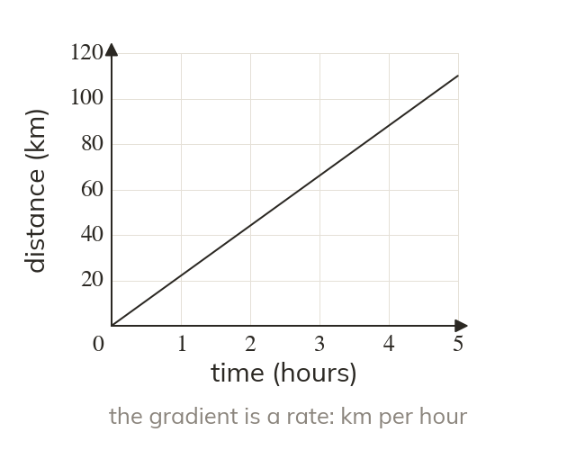
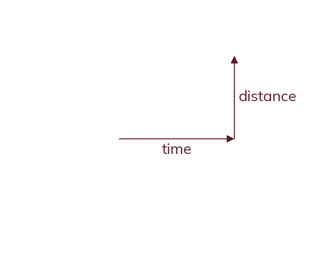

Gradient as a rate
On a real-world graph, the gradient is a rate: y-units per x-unit. On a distance-time graph, the gradient is speed.
In a real-world graph, both axes represent actual quantities with units, so the gradient is not just a bare number but a rate: y-units per x-unit. On a distance-time graph, where the vertical axis is distance and the horizontal axis is time, the gradient represents speed - distance travelled per unit of time.